A imagem apresenta a explosão de uma bomba atômica. Quais são os materiais necessários e o tipo de energia envolvido nessa reação química?
A reação química da explosão de uma bomba contradiz, aparentemente, um dos principais princípios da natureza: a conservação da massa. O que ocorre com a massa nesse fenômeno?
Atualmente, esses materiais podem ser utilizados com finalidades pacíficas. Dê exemplos desses usos.
Objetivos da unidade
analisar movimentos de corpos com velocidades próximas à velocidade da luz;
resolver situações que envolvam a dilatação do tempo e a contração do espaço;
compreender o efeito fotoelétrico e suas aplicações;
estudar o desenvolvimento da física de partículas e dos aceleradores de partículas;
estabelecer o modelo atômico padrão.
A liberação da energia atômica mudou tudo, menos nossa maneira de pensar.
Albert Einstein
Os conteúdos abordados até agora pertencem ao que se conhece como Física Clássica e estão relacionados a desenvolvimentos científicos que ocorreram do século XVII ao século XIX.
Nas últimas décadas do século XIX, alguns experimentos apontaram para novas áreas da Física que estariam ainda para ser exploradas: a Física Moderna – que contempla, em especial, a Teoria da Relatividade, o efeito fotoelétrico, os
modelos atômicos e a física de partículas.
Teoria da Relatividade
No início do século XX, Ernest Rutherford (1871-1937), Niels Bohr (1885-1962) e outros tantos cientistas brilhantes abriram caminho para o desenvolvimento de um novo campo de estudo – a Física Moderna. Em 1905, Albert Einstein publicou
quatro artigos revolucionários, um deles contemplando a Teoria da Relatividade Restrita.
Algumas das suposições teóricas de Einstein, posteriormente visualizadas em fenômenos da natureza e comprovadas com experimentos, mostraram que certas leis da Mecânica Clássica de Newton e Galileu não são universais.
Corpos que se movimentam com velocidades comparáveis à da luz têm movimentos que não se adaptam às funções clássicas de posição e velocidade e são descritos somente pelas equações da Teoria da Relatividade. Além disso, para móveis
com velocidades habituais, as equações da Física Clássica e da Física Moderna chegam a resultados praticamente idênticos e válidos, evidenciando que as equações da Teoria da Relatividade são mais genéricas e universais que as equações
da Mecânica Clássica.
Na Mecânica Clássica, para determinar a velocidade relativa (vr) entre dois corpos que se movimentam na mesma direção, basta fazer a diferença entre suas velocidades escalares:
A velocidade relativa do corpo 1 em relação ao 2 é dada por vr = v1 – v2 = 60 – 40. Assim, vr = 20 m/s. Caso os corpos se movimentem em sentidos opostos, ao aplicar a regra de sinal, veremos
que a velocidade relativa é determinada pela soma das velocidades dos corpos:
A velocidade relativa do corpo 1 em relação ao 2 é dada por vr = v1 – v2 = 60 – (– 20). Assim, vr = 80 m/s.
Considere, agora, uma situação em que você, ao se movimentar dentro de um carro com velocidade de 108 km/h (30 m/s), se aproxima de um semáforo. Nesse caso, qual é a velocidade relativa da luz do sinaleiro em relação a você?
Segundo a Física Clássica, a luz emitida pelo semáforo deveria chegar a seus olhos à velocidade de 300 000 030 m/s, isto é, 300 000 000 m/s da própria luz mais 30 m/s do carro. Apesar de esse cálculo e o valor parecerem lógicos, não é
isso o que realmente ocorre conforme a Teoria da Relatividade Restrita. De acordo com os postulados de Einstein, a luz chega a seus olhos com a velocidade de exatamente 300 000 000 m/s (300 000 km/s).
Ainda pela teoria proposta por Einstein, nada pode se mover mais rapidamente do que a luz no vácuo, isto é, a velocidade de 300 000 km/s é a máxima velocidade com que um corpo ou uma onda poderia se movimentar. Assim, se você
estivesse, supostamente, se movimentando com velocidade de 50 000 km/s ao encontro de uma estrela, a luz emitida por ela não chegaria a você com velocidade de 350 000 km/s, mas, sim, a 300 000 km/s. Para sistematizar os fundamentos da
Relatividade Restrita, válida para referenciais inerciais, Einstein elaborou dois postulados.
Primeiro postulado (princípio da relatividade): as leis físicas são válidas em quaisquer sistemas de referencial, ou seja, não há sistema inercial físico preferencial.
Segundo postulado (princípio da invariância da velocidade da luz): a velocidade da luz, em determinado meio, é constante para qualquer referencial adotado.
Em todas as situações estudadas na Física Clássica, o tempo transcorre de maneira idêntica, qualquer que seja o referencial adotado. Para dois corpos que contêm cronômetros idênticos e sincronizados, o tempo passa da mesma forma,
independentemente de um deles estar em movimento e o outro em repouso.
Segundo a Física Moderna, por exemplo, o intervalo de tempo medido por uma pessoa com velocidade comparável à da luz transcorre mais lentamente que intervalos de tempo medidos por uma pessoa em repouso. Isso significa que o tempo de
uma hora, para um observador em repouso na superfície da Terra, pode corresponder a apenas alguns minutos para outro observador que estivesse em velocidades próximas à da luz. Tal fato é conhecido como dilatação do tempo.
Existem algumas evidências da dilatação do tempo. Uma delas se refere aos múons, partículas atômicas que se formam a partir de raios cósmicos, penetram na atmosfera terrestre e atingem a superfície do planeta. Se a dilatação do tempo
não ocorresse, o número de múons que chegaria à Terra seria muito menor, pois eles têm intervalo de tempo de meia-vida (tempo para a massa de determinada amostra reduzir-se à metade) muito pequeno. Como os múons têm velocidade próxima à
da luz, a dilatação do tempo para eles é significativa, possibilitando-lhes atravessar a atmosfera da Terra e ser detectados em sensores presentes em balões meteorológicos.
A dilatação do tempo não é apenas um fenômeno com evidências experimentais. Ela pode ser mensurada matematicamente por intermédio das transformações de Lorentz (em homenagem a Hendrik Antoon Lorentz). Para
compreendê-las, imagine um suposto trem capaz de atingir velocidades próximas à velocidade da luz no vácuo.
Esse trem está inicialmente em repouso em relação à Terra (v = 0) e, em seu interior, existe uma fonte F que envia luz do chão para o teto. No interior do trem, há um observador que permanece em repouso em relação à
fonte de luz. Fora do trem, existe outro observador que permanece em repouso em relação à Terra. Para os dois observadores, a luz emitida pela fonte sobe com a mesma velocidade c (aproximadamente 3 ∙ 108
m/s):
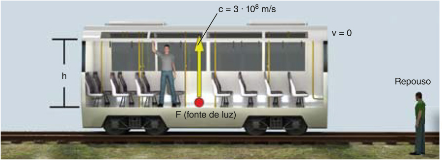
Ilustrações: Divo. 2012. 3D.
A luz produzida por uma fonte F se propaga com velocidade c = 3,0 ∙ 108 m/s.
Observe o que ocorre quando o trem se movimenta com uma velocidade próxima à da luz:
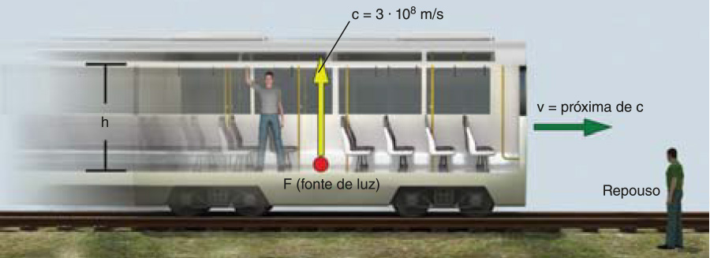
Em relação ao observador no interior do trem, a luz emitida pela fonte continua percorrendo o mesmo deslocamento vertical e com a mesma velocidade. No entanto, em relação ao observador em repouso na superfície da Terra, a luz da fonte,
além de realizar o movimento vertical (para cima), também se movimenta na horizontal (devido ao deslocamento do trem). Assim, a trajetória do raio de luz emitido pela fonte F para o observador externo ao trem será:
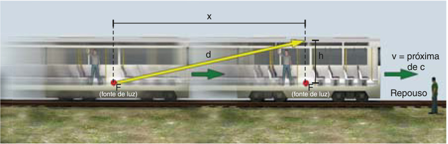
A distância percorrida pela luz para o observador no trem é igual a h; a distância percorrida pela luz para o observador fora do trem é d.
Na imagem, h indica a distância que a luz percorre em relação ao observador que está dentro do trem; d representa a distância que a luz percorre em relação ao observador na Terra, durante o movimento
do trem; e x é a distância que o trem percorre em relação ao observador na Terra.
De acordo com os postulados da Relatividade Restrita de Einstein, a velocidade da luz no vácuo é a mesma para qualquer referencial. Assim, para ambos os observadores, a velocidade da luz é constante e tem módulo igual a
c. Aplicando a definição de velocidade média para o trem e para os dois observadores, tem-se:
Observador 1 (no interior do trem)
$$V_m = \frac{\Delta s}{\Delta t} \Rightarrow c = \frac{h}{\Delta t_1} \Rightarrow h = c ⋅ \Delta t_1 (1)$$
Observador 2 (fora do trem)
$$V_m = \frac{\Delta s}{\Delta t} \Rightarrow c = \frac{d}{\Delta t_2} \Rightarrow d = c ⋅ \Delta t_2 (2)$$
Trem
$$V_m = \frac{\Delta s}{\Delta t} \Rightarrow V = \frac{x}{\Delta t_2} \Rightarrow x = V ⋅ \Delta t_2 (3)$$
Conforme o Teorema de Pitágoras, o deslocamento d2 pode ser determinado por: d2 = h2 + x2. Substituindo os resultados encontrados nas equações 1, 2 e 3, tem-se:
Nessa equação, $$\Delta t_1$$ equivale ao intervalo de tempo transcorrido para o evento chamado de tempo próprio; $$\Delta t_2$$ é o intervalo de tempo transcorrido para um observador que se encontra em repouso ou com baixa velocidade;
e c é a velocidade da luz no vácuo (3 ∙ 108 m/s).
Também podemos representar a equação anterior por: $$\Delta t_2 = γ ⋅ \Delta t_1$$. Nela, o símbolo γ é conhecido como fator de Lorentz e vale:
$$γ = \frac{1}{\sqrt{1 − \frac{V^2}{c^2}}}$$
Conexões
Um exemplo conhecido da aplicação das transformações de Lorentz e dos postulados de Einstein é o “paradoxo dos gêmeos”. Imagine que gêmeos idênticos, ainda jovens, são separados no ano 2000, um deles permanece na Terra enquanto o outro
é colocado em uma nave espacial para viajar a altíssimas velocidades.
DKO Estúdio. 2012. Digital.
Início da viagem de um dos irmãos no “paradoxo dos gêmeos”.
DKO Estúdio. 2012. Digital.
Conforme o paradoxo dos gêmeos, aquele que permaneceu em uma viagem com velocidade próxima à da luz experienciou menor intervalo de tempo.
Na volta do gêmeo astronauta para a Terra, algo curioso seria observado. Depois de passados muitos anos na Terra, o gêmeo que aqui ficou teria a aparência de estar mais velho que seu irmão.
Para compreender esse paradoxo, suponha que a velocidade da nave do gêmeo astronauta corresponda a 80% da velocidade da luz no vácuo (0,8 c) e que sua viagem tenha duração de 70 anos para o gêmeo que ficou na Terra.
Nesse caso, usando a transformação de Lorentz, descobre-se que se passaram 42 anos para o gêmeo astronauta e 70 anos para o irmão que permaneceu na Terra. É como se o tempo tivesse dilatado para o gêmeo que viajou.
Contração do espaço
De acordo com a Teoria da Relatividade, as dimensões de um corpo podem ser alteradas caso o corpo se movimente com velocidades próximas à velocidade da luz. Para um corpo que se movimenta próximo à velocidade da luz, o comprimento
assume valores menores em relação ao comprimento em repouso. A relação que permite determinar o comprimento de um corpo com velocidades próximas à da luz é:
De acordo com a equação, L indica o comprimento de um corpo que se move com velocidade v; L0 é o comprimento do corpo em repouso; v representa a velocidade
do corpo; e c é a
velocidade da luz no vácuo (3 ∙ 108 m/s).
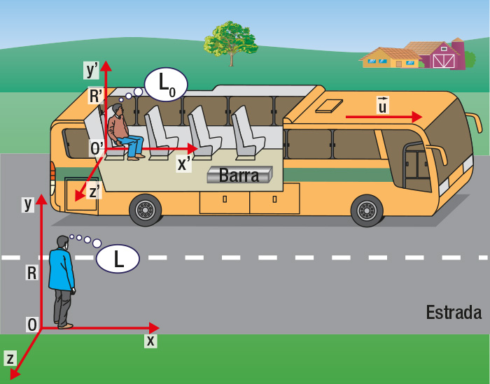
Eduardo Borges. 2013. Digital.
Para um observador fora do ônibus, a barra terá um comprimento menor em relação ao observador dentro do ônibus.
Considere que dois observadores veem uma barra de metal dentro de um ônibus que se movimenta com velocidade próxima à da luz. Todavia, um deles faz a observação em um referencial em repouso e o outro faz a observação dentro do próprio
ônibus. Nesse caso, o observador externo observa a barra com comprimento menor do que aquele que está dentro do ônibus, uma vez que quem está dentro a observa em repouso.
Massa e energia
Além dos postulados referentes à Relatividade Restrita, outro trabalho revolucionário de Einstein, publicado em 1905, refere-se à relação entre a massa e a energia de um corpo. De acordo com Einstein, há uma equivalência entre matéria
e energia, permitindo que um corpo em repouso em dado referencial tenha uma energia associada que pode ser determinada por:
E0 = m ∙ c2
Nessa equação, E0 representa a energia de repouso que pode ser obtida de uma massa m e c é a velocidade da luz, isto é, 3,0 ∙ 108 m/s. Sua unidade no Sistema Internacional é o
joule (J), entretanto é comum a utilização da unidade elétron-volt (eV).
1 eV = 1,6 ⋅ 10–19 J
A análise da relação de Einstein permite-nos entender que as quantidades de matéria e energia são mutuamente relativas, e essa relação é definida por uma constante (universal), a velocidade da luz.
Uma das aplicações da equação de Einstein foi observada na construção de artefatos nucleares. No artefato utilizado em Nagasaki, estima-se que a explosão que atingiu a cidade foi equivalente a 21 quilotons (quilo-toneladas) de TNT, o
que corresponde a uma conversão massa-energia de aproximadamente 1,0 g de material físsil utilizado, o plutônio.
A respeito do paradoxo dos gêmeos, o gêmeo que foi ao espaço poderia ter uma velocidade tão grande a ponto de voltar para a Terra antes de seu irmão ter nascido?
Uma partícula tem velocidade que corresponde a 60% da velocidade da luz no vácuo em relação à Terra. Se, para um relógio colocado no solo terrestre, passar um tempo de 5 minutos, quanto tempo terá passado para essa partícula?
Em relação à questão anterior, se, para a partícula, passa um intervalo de tempo menor do que o medido para corpos em repouso em relação à Terra, por que se diz que houve dilatação do tempo para essa partícula?
Imagine que você fosse morar em um local em que é comum as pessoas se deslocarem com velocidades que variam entre 0% e 99% da velocidade da luz no vácuo. Nesse local, seria confiável marcar com alguém, com algumas semanas de
antecedência, um compromisso com local e horário definidos?
(UPE) Uma régua cujo comprimento é de 50 cm está se movendo paralelamente à sua maior dimensão com velocidade de 0,6 c em relação a certo observador. Sobre isso, é correto afirmar que o comprimento da régua, em centímetros, para
esse observador vale:
a) 35
b) 40
c) 62,5
d) 50
e) 100
Um elétron é colocado em um acelerador de partículas e atinge a velocidade de 0,8 c. Sabendo que sua massa de repouso corresponde a 9,1 ⋅ 10–31 kg, determine:
a) a energia mecânica total ET do elétron considerando que ET = γ ⋅ m ⋅ c2. Apresente a resposta em keV.
b) a energia de repouso do elétron. Apresente a resposta em keV.
c) a energia cinética relativística (Ec) do elétron, sabendo que ela é definida como a diferença entre a energia mecânica total e a energia de repouso.
Efeito fotoelétrico
Na segunda metade do século XIX, o físico alemão James Clerk Maxwell (1831-1879) sintetizou as teorias do Eletromagnetismo, demostrando que a luz é formada por uma combinação de ondas elétricas e magnéticas – o que conhecemos
atualmente por radiação eletromagnética.
Todavia, um experimento observado na década de 1840 pelo francês Alexandre E. Becquerel ainda não havia sido plenamente explicado com base nas teorias do Eletromagnetismo Clássico de Maxwell. Esse experimento consiste na incidência de
radiação eletromagnética ultravioleta, de alta energia, em superfícies metálicas, fazendo com que elétrons sejam removidos do metal.
De acordo com a Teoria Clássica do Eletromagnetismo, quanto maior a intensidade da luz emitida no metal e, consequentemente, mais energia luminescente, maior deveria ser a energia com que os elétrons eram ejetados. Mas isso não
ocorria. Em vez disso, o que acontecia era o aumento do número de elétrons ejetados. Por outro lado, ao incidir radiação de maior frequência sobre o metal, observava-se que a energia dos elétrons ejetados aumentava.
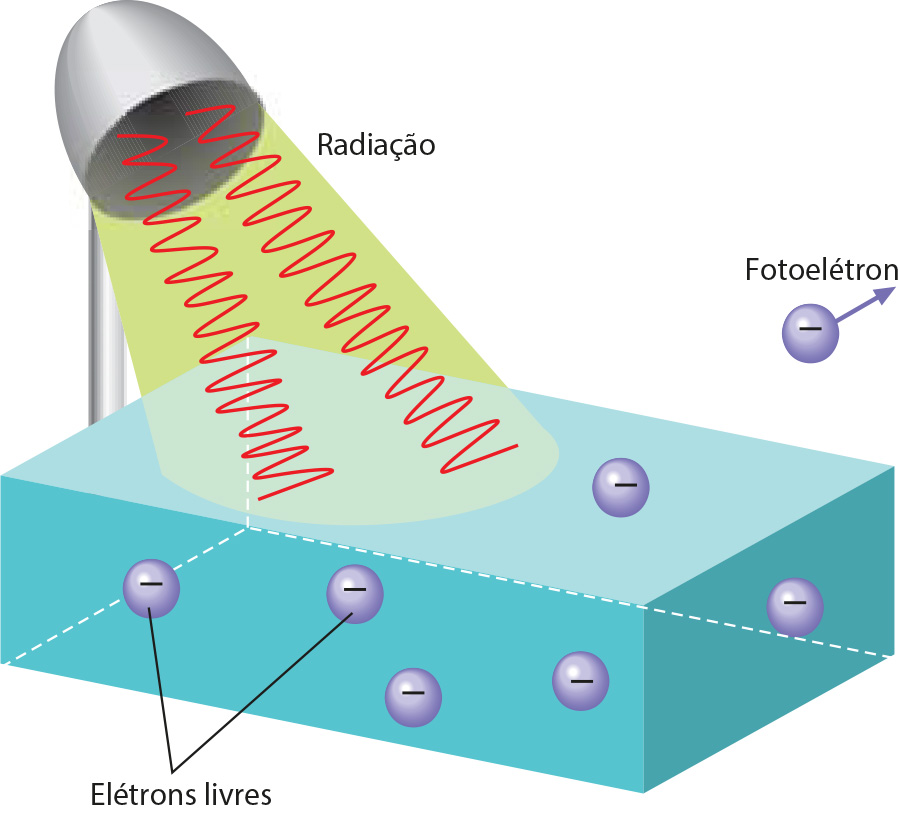
Jack Art. 2012. Digital.
Conforme o Eletromagnetismo Clássico, a luz é formada por ondas eletromagnéticas que fornecem energia para os elétrons serem ejetados do material.
As primeiras respostas para essas dúvidas começaram a ser formuladas em 1900, quando o físico alemão Max Planck (1858-1947) verificou que a quantidade de energia emitida por uma luz monocromática não assume quaisquer valores. Ela é
sempre múltipla inteira de um valor mínimo, valor esse denominado quantum. Atualmente, o quantum de energia da luz monocromática é chamado de fóton.
Fóton é um “pacote” de energia irradiada que se desloca no vácuo com velocidade de 3 ∙ 108 m/s.
Para calcular um quantum de energia de uma onda eletromagnética (fóton), pode-se usar uma equação proposta por Planck:
E = h ∙ ν
Nessa equação, E representa a energia de um quantum de luz monocromática; h é a constante de Planck (h = 6,63 ∙ 10–34 J ∙ s); e ν representa a frequência da luz monocromática.
A equação de Planck mostra que, quanto maior for a frequência de determinada radiação, maior será a energia do quantum. Como a luz monocromática violeta tem maior frequência que a luz monocromática vermelha, a energia do quantum da luz
violeta é maior que a do quantum da luz vermelha.
Cinco anos após a publicação dos trabalhos de Planck, Einstein elaborou uma teoria capaz de explicar o fenômeno observado no efeito fotoelétrico. Utilizando a equação e o princípio da quantização da energia luminosa de Planck, Einstein
propôs que um elétron é capaz de absorver um único fóton (ou não absorve nada, pois não existe fração de fóton), não podendo jamais armazenar dois ou mais fótons para serem arrancados do átomo.
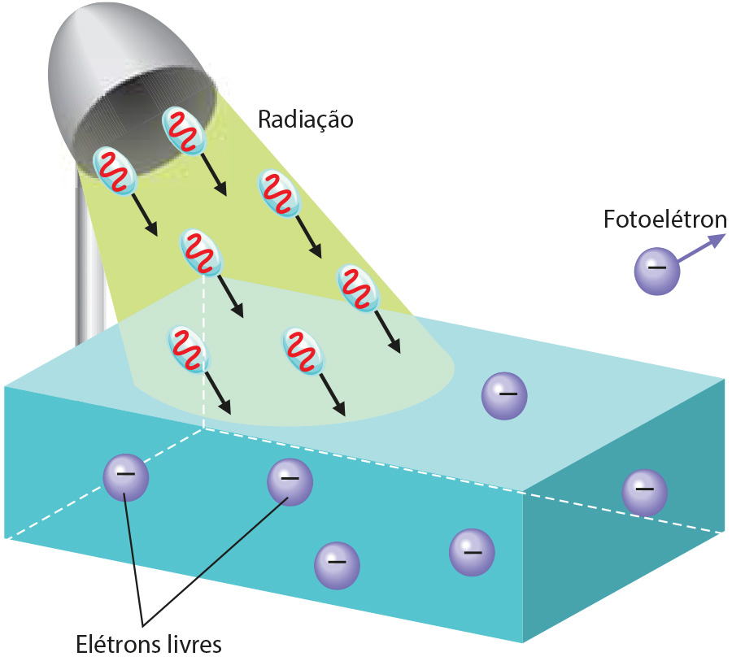
Jack Art. 2012. Digital.
Conforme os pressupostos de Einstein, a luz é formada por pacotes de energia que transferem sua energia aos fótons, de modo semelhante a uma colisão.
De acordo com a proposta de Einstein, se uma radiação eletromagnética monocromática não remover elétrons do metal, o aumento de sua intensidade não fará com que elétrons sejam removidos, conforme previa o eletromagnetismo clássico.
Nesse caso, é necessário aumentar a energia do fóton e, para isso, deve-se aumentar a frequência da radiação, conforme equação de Planck. Assim, se para determinado metal a luz vermelha não for capaz de arrancar elétrons, pode ser que a
luz violeta ou, ainda, ultravioleta consiga fazê-lo, pois ambas apresentam maior frequência (e maior energia).
Anos mais tarde, as conclusões de Einstein e Planck ganharam maior importância, pois serviram de fundamento para o modelo atômico de Bohr. De acordo com esse modelo, no estado fundamental de um átomo, os elétrons se encontram no nível
mais baixo possível de energia. Quando um elétron está num nível energético acima do estado fundamental (estado excitado), ele emite um fóton e retorna para sua camada original.
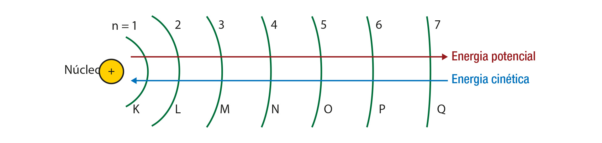
Se um elétron da camada M receber um fóton, ele passa para a camada N. Nesse caso, sua energia potencial aumenta, sua energia cinética diminui e sua energia total aumenta, pois ele recebeu um fóton. Se um elétron da camada Q ceder um
fóton, ele passa para a camada P. Nesse caso, sua energia potencial diminui, sua energia cinética aumenta e sua energia total diminui, pois ele cedeu um fóton.
Segundo Einstein, no efeito fotoelétrico, a energia que um fóton fornece a um elétron (h ∙ ν) é parcialmente utilizada para arrancar o elétron (E0), pois a energia excedente é convertida em energia cinética
(Ec).
h ∙ ν = E0 + Ec
Atividades
A frequência da luz vermelha é de 4,3 ∙ 1014 Hz e a da luz violeta, 7,5 ∙ 1014 Hz. Calcule a energia de um fóton da luz vermelha e de um fóton da luz violeta.
(UFRGS – RS) De acordo com a teoria formulada em 1900, pelo físico alemão Max Planck, a matéria emite ou absorve energia eletromagnética de maneira ________ emitindo ou absorvendo ________, cuja energia é proporcional à ________ da
radiação eletromagnética envolvida nessa troca de energia.
Assinale a alternativa que, pela ordem, preenche corretamente as lacunas:
a) contínua; quanta; amplitude
b) descontínua; prótons; frequência
c) descontínua; fótons; frequência
d) contínua; elétrons; intensidade
e) contínua; nêutrons; amplitude
Em um átomo, o primeiro nível ocupado por um elétron tem energia E1 = –2,6 ∙ 10–19 J e o segundo, desocupado, tem energia E2 = –1,3 ∙ 10–19 J. Ao ser iluminado com luz monocromática, de
determinada frequência, esse átomo absorve um fóton e, com isso, o elétron passa do primeiro nível para o segundo. Sabe-se que o valor da constante de Planck é de 6,6 ∙ 10–34 J ∙ s. Considerando essas informações, é
correto afirmar que, na situação descrita, a frequência da luz incidente no átomo é de, aproximadamente,
a) 1 ∙ 1014 s–1
b) 2 ∙ 1014 s–1
c) 3 ∙ 1014 s–1
d) 4 ∙ 1014 s–1
(UEL – PR) Atualmente, sabe-se que as partículas que compõem a matéria formadora do Universo podem ter comportamentos de natureza tanto corpuscular como ondulatória. O fato de não observarmos diretamente a natureza ondulatória em
objetos materiais macroscópicos, como em uma bola de bilhar de aproximadamente 50 g, possuindo velocidade igual a 5,0 m/s, deve-se: (Dados: h = 6,63 ∙ 10–34 J ∙ s = 4,14 ∙ 10–15 eV ∙ s)
a) à razão de não ter sido inventado um aparelho ótico que identifique diretamente essa característica da matéria;
b) ao fato de o comprimento de onda associado, que tem o valor de 2,65 ∙ 10–33 m, ser pequeno para uma detecção, mesmo com aparelhos de medida que alcancem a ordem de grandeza no nível
subatômico;
c) à massa da bola, pois tem um valor muito grande para ser possível a demonstração do caráter ondulatório;
d) a uma falha dos postulados de Louis de Broglie e na experiência de Davissum-Germer na medida de comprimento de onda da bola de bilhar;
e) aos centros difratores (orifícios, fendas ou átomos) utilizados para medir a frequência da onda associada à bola, de valor 1,89 ∙ 1033 Hz, estarem localizados incorretamente nos
equipamentos de detecção.
(UFSC) Assinale a(s) proposição(ões) correta(s):
(01) A luz, em certas interações com a matéria, comporta-se como uma onda eletromagnética; em outras interações ela se comporta como partícula, como os fótons no efeito fotoelétrico.
(02) A difração e a interferência são fenômenos que somente podem ser explicados satisfatoriamente por meio do comportamento ondulatório da luz.
(04) O efeito fotoelétrico somente pode ser explicado satisfatoriamente quando consideramos a luz formada por partículas, os fótons.
(08) O efeito fotoelétrico é consequência de comportamento ondulatório da luz.
(16) Devido à alta frequência da luz violeta, o “fóton violeta” é mais energético do que o “fóton vermelho”.
Física de partículas
Do que é constituída a matéria? Essa é uma das questões fundamentais da Física e que desperta a curiosidade de pensadores há muitos séculos. O filósofo grego Demócrito (460 a.C.-370 a.C.) há mais de 20 séculos já pensava sobre a
constituição da matéria e introduziu a teoria de que toda matéria é formada por minúsculas partículas indivisíveis.
Essas partículas foram denominadas átomos, que em grego significa não divisível – “a” denota negação e “tomo” significa divisão. Para Demócrito, havia átomos de diversos tamanhos e formatos, explicando a diversidade de substâncias e
corpos no Universo.
Desde a proposição de Demócrito até o início do século XX, a ideia da indivisibilidade dos átomos foi dominante entre a maioria dos cientistas. A compreensão dos mecanismos de algumas reações químicas e a identificação de partículas
subatômicas, como o próton e o elétron, motivaram os cientistas a discutir e elaborar novos modelos atômicos. A seguir, vamos estudar o modelo atômico atual, mais conhecido como modelo-padrão, o qual explica a existência e a correlação
entre as inúmeras partículas constituintes do átomo.
A escultura Wandering the immeasurable do artista canadense Gayle Hermick, é uma homenagem as descobertas que marcaram a história da Física. Começa com a Grécia Antiga até o descobrimento do bóson de Higgs.
Até a década de 1930, as principais partículas atômicas conhecidas eram o elétron, o próton e o nêutron. Nos anos seguintes, inúmeras outras partículas subatômicas, que fazem parte da constituição dos prótons e dos nêutrons, foram
gradativamente sendo descobertas à medida que novos instrumentos foram sendo desenvolvidos.
Uma das principais dificuldades para detectar as partículas que constituem o núcleo atômico se deve a suas pequenas dimensões e ao tempo de vida muito curto quando isoladas. Assim, a detecção dessas partículas ocorre mediante condições
muito restritas, em geral após reações de alta energia envolvendo os prótons.
Os principais equipamentos para detecção das partículas subatômicas são as câmaras de detecção e os aceleradores de partículas. Além desses equipamentos, outro método de detecção de partículas consistia no uso de filmes fotográficos
formados por emulsões nucleares sensíveis a partículas radioativas. Uma vez que esses filmes podiam ser desenvolvidos em dimensões pequenas, eram transportados para montanhas elevadas ou em balões meteorológicos, podendo captar
partículas presentes em raios cómicos.
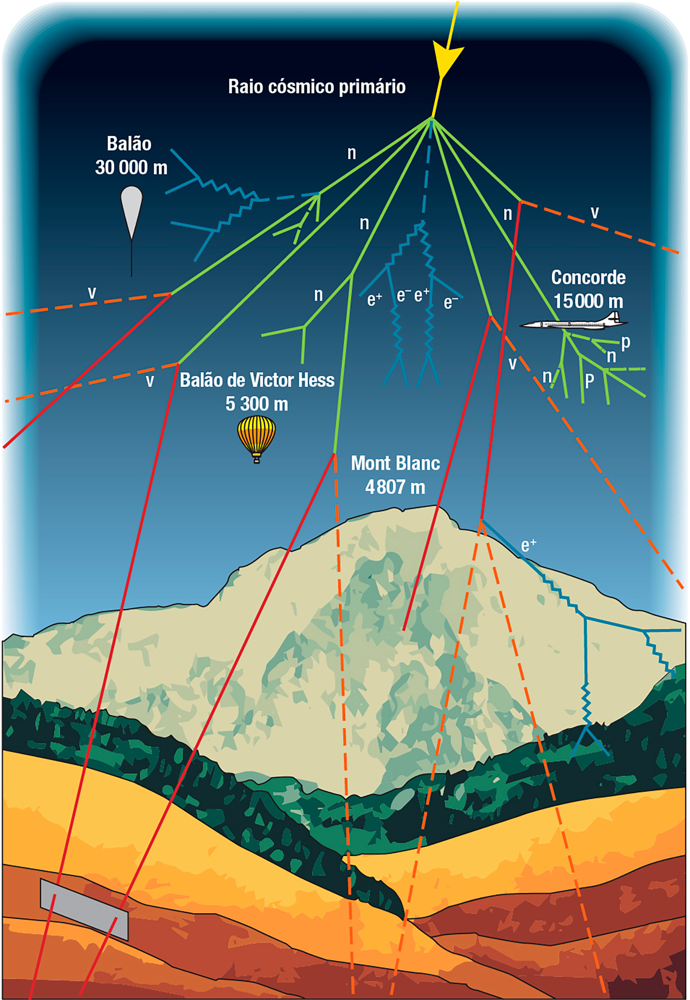
Eduardo Borges. 2015. Digital.
Raios cósmicos são partículas de alta energia que viajam aproximadamente à velocidade da luz (300 000 km/s). Quando chegam à atmosfera terrestre, chocam-se com as partículas da atmosfera, originando raios cósmicos secundários e
terciários.
Conexões
Cesar Mansueto Giulio Lattes foi um físico e matemático brasileiro, nascido no Paraná, na cidade de Curitiba, e deu importantes contribuições à descoberta de uma partícula denominada méson pi ou píon (π). Essa
partícula foi teoricamente prevista em 1937 e, por ter uma intensa energia e um tempo de vida muito pequeno, levou praticamente uma década para ser observada experimentalmente.
Omar Paixão/Abril Comunicações S.A
Físico brasileiro César Lattes.
Cesar Lattes observou que o uso do composto conhecido como tetraborato de sódio em uma emulsão nuclear permitia o aumento do tempo de retenção da imagem dessas partículas nos filmes fotográficos. Após essa modificação no filme
fotográfico, foi até o alto do Monte Chacaltaya, nos Andes bolivianos, e expôs o filme, obtendo a imagem dos rastros do píon.
Pico Chacaltaya, onde Lattes montou o laboratório para detectar raios cósmicos.
O formato da trajetória deixada pelas partículas levou Lattes a concluir que eram píons, uma vez que outras partículas já conhecidas como raios gama e raios X deixavam marcas com outros formatos.
Essa descoberta resultou no Prêmio Nobel de Física de 1950 para o chefe do laboratório em que Lattes trabalhava.
Aceleradores de partículas
Os aceleradores de partículas são equipamentos que aceleram feixes de partículas eletricamente carregadas, como prótons ou elétrons, a elevadas velocidades. Um dos principais objetivos de um acelerador de partículas é provocar colisões
frontais entre esses feixes, ocasionando a ruptura do átomo a fim de identificar partículas que constituem a matéria.
Os cientistas observam a colisão realizada entre feixes de partículas em aceleradores e detectam o produto dessa colisão.
Existem diversos aceleradores de partículas, os quais se distinguem conforme descrito a seguir.
Tipo de partícula acelerada: na maioria dos aceleradores, as partículas aceleradas são prótons e elétrons. No caso dos elétrons, sua obtenção pode ser realizada por meio do aquecimento de metais ou da incidência de radiações de
alta energia. Quanto aos prótons, a principal forma de obtenção é por átomos de hidrogênio ionizado.
Trajetória descrita pelas partículas: há basicamente dois tipos de aceleradores quanto à trajetória descrita pelas partículas – os lineares e os circulares. Nos aceleradores lineares, as partículas são aceleradas por um campo
elétrico de alta intensidade e colidem contra o feixe que se movimenta no sentido contrário. Em aceleradores circulares, um campo elétrico faz com que as partículas adquiram aceleração tangencial, enquanto um campo magnético faz com
que elas descrevam a trajetória circular ao longo dos dutos de aceleração. A principal vantagem desse acelerador é que as partículas podem ser aceleradas executando inúmeras voltas, até que obtenham a energia necessária para as
colisões.
Tipo de colisão: as colisões em um acelerador de partículas podem ser realizadas entre feixes que se movimentam em sentidos opostos ou contra um alvo fixo.
No Brasil, há diversos aceleradores de partículas, tanto lineares quanto circulares. Quanto aos lineares, podem ser encontrados no Rio de Janeiro, no Centro Brasileiro de Pesquisas Físicas (CBPF); em São Paulo, no instituto de pesquisa
da USP; e em alguns hospitais. No Rio de Janeiro, há, ainda, um acelerador circular no Instituto de Energia Nuclear (IEN); no estado de São Paulo, encontram-se aceleradores circulares no Instituto de Pesquisas Nucleares (Ipen); e, em
Campinas, no Laboratório Nacional de Luz Síncrotron (LNLS).
Atualmente, o maior acelerador de partículas é o LHC (large hadrons collider – grande colisor de hádrons). Esse acelerador, localizado na fronteira entre Suíça e França, levou oito anos para ser construído e contou com a
participação de 20 países, em um investimento de cerca de 6 bilhões de dólares. Esses 20 países que colaboraram com investimentos para a construção do acelerador fazem parte da Organização Europeia para Pesquisas Nucleares, o CERN.
O CERN está localizado entre a França e a Suíça e é o maior centro de colisões e estudo de partículas.
O LHC tem um formato circular, com 8,6 km de diâmetro e 27 km de comprimento. Os tubos supercondutores que guiam os feixes de partículas têm em torno de 1 m de diâmetro e foram construídos a uma profundidade de 50 a 170 metros. No
interior desses tubos, os feixes de prótons (hádrons) são acelerados a uma velocidade de aproximadamente 299 800 km/s.
Existem quatro centros de análise das colisões: ATLAS, ALICE, CMS e LHCb. Esses centros de análise monitoram os resultados das colisões e permitem identificar as partículas subatômicas. Quanto às dimensões físicas, têm o tamanho de
prédios de quatro a cinco andares (entre 10 e 25 metros de altura) e massa de até 12 500 toneladas.
O físico é o profissional que estuda os fenômenos basicamente relacionados à matéria e à energia, em áreas como Mecânica, Hidrostática, Hidrodinâmica, Cinemática, Ondulatória, Óptica, Termologia e Eletromagnetismo.
A experimentação em laboratórios é uma das principais atividades de um físico experimental.
O campo de trabalho de um físico é bastante variável, indo da indústria de novas tecnologias (que normalmente utiliza a física nuclear, a astrofísica e a física dos materiais) até a área médica (estudos sobre biofísica e métodos de
diagnóstico).
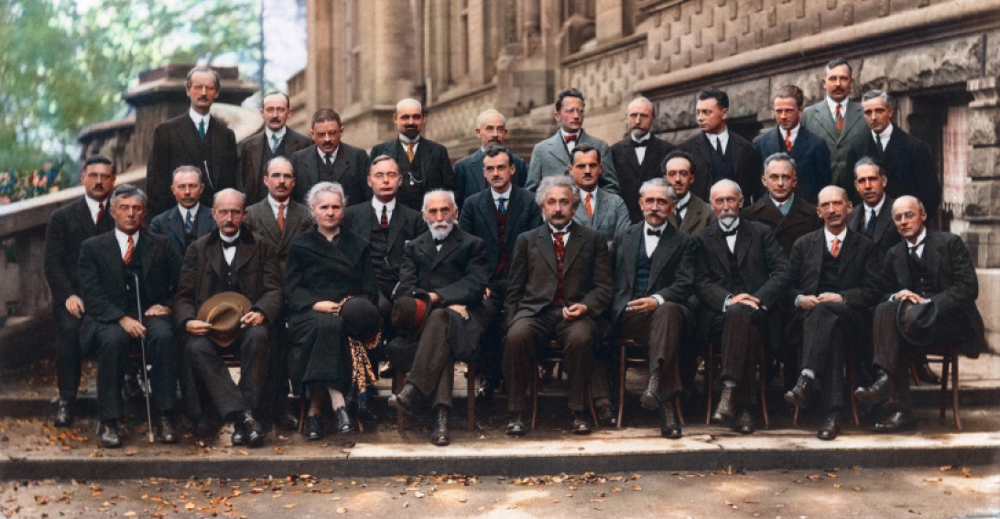
Glow Images/ip Archive
A 5ª. Conferência de Solvay foi realizada em 1927 e contava com físicos e químicos. Na fotografia, 17 dos 29 participantes receberam o Prêmio Nobel.
Além do trabalho com a Física Aplicada, muitos profissionais dessa área dedicam-se a questões teóricas. Atualmente, alguns físicos desenvolvem, por exemplo, modelos matemáticos para o mercado financeiro ou processos biológicos.
Fora os campos de atuação relacionados ao curso de bacharelado em Física, existem também as possibilidades de atuação em licenciatura. Muitos físicos dedicam-se ao magistério, dando aulas no Ensino Médio ou no Ensino Superior.
Câmaras de detecção
Além dos aceleradores de partículas, as câmaras de detecção são equipamentos eficazes na descoberta de inúmeras partículas subatômicas.
A câmara de névoa foi um dos primeiros equipamentos de visualização utilizado para análise e estudo das partículas subatômicas. Ela foi desenvolvida por Charles Thompson Wilson, na década de 1910, e por isso ficou também conhecida como
Câmara de Wilson. Nessas câmaras, submete-se um gás, que pode ser a própria atmosfera, a rápidas contrações e expansões adiabáticas, formando uma névoa de vapor de água em suspensão. A passagem de partículas subatômicas pelo vapor da
câmara permite a visualização do trajeto descrito pelas partículas.
Outra importante câmara de detecção é a câmara de bolhas, desenvolvida pelo físico estadunidense Donald Glaser na década de 1950. A câmara de bolhas é formada por um recipiente e um líquido (em geral, hidrogênio líquido) superaquecido
e submetido à pressão elevada. Um feixe de partículas é lançado dentro da câmara com alta energia, colidindo contra as moléculas do líquido superaquecido e provocando a ebulição por onde passa. O rastro formado pelas bolhas dura cerca
de 1 milésimo de segundo, permitindo a análise por meio de fotografias tiradas de vários ângulos.
Além das câmaras de névoa e bolhas, as câmaras de faíscas também permitem a detecção de partículas subatômicas. Nessas câmaras, placas metálicas são dispostas paralelamente em um recipiente com gases nobres, como hélio e neon. A
passagem de partículas carregadas ioniza o gás nobre durante um intervalo de tempo de cerca de milissegundos. Nesse instante, as placas são submetidas a diferenças de potencial, formando faíscas nas posições por onde as partículas
passaram. Embora as câmaras de faíscas tenham sido amplamente utilizadas para detecção de raios gama, foram gradativamente substituídas por câmaras de bolhas, que permitem a determinação da trajetória das partículas com maior precisão.
Latinstock/Alamy/PHOTOTAKE/Yoav Levy
Getty Images/DeAgostini
Rastro deixado pelas partículas em câmara de bolhas.
Classificação das partículas nucleares
A partir da década de 1930, quando novas partículas subatômicas passaram a ser detectadas, foram previstas mais de 300 outras partículas – das quais, a maioria foi identificada experimentalmente. Com esse grande número de partículas,
surgiram novas classificações e padronizações para sistematizar a estrutura da matéria. Atualmente, as partículas que constituem a matéria (férmions) são divididas em duas categorias principais: os hádrons e os
léptons.
Os hádrons são partículas que têm, de modo geral, maior massa e são constituídas de subpartículas nucleares – os quarks. Além disso, os hádrons manifestam uma força de interação nuclear, que existe entre quarks – a
força nuclear forte. Essa força é responsável, de acordo com o modelo atômico atual, por manter os quarks conectados a uma distância estável e é intermediada por uma partícula denominada glúon.
São exemplos de hádrons: os nêutrons, os prótons e os mésons (como os mésons pi).
Os léptons são partículas que têm, geralmente, uma massa menor e que não são formadas por quarks, por isso não manifestam a força forte. Os elétrons são os principais exemplos de léptons.
Os quarks
Os quarks compõem a estrutura básica da matéria. Nos anos de 1960, os físicos Murray Gell Mann e George Zweig apresentaram um modelo no qual os hádrons, as partículas que compõem o núcleo do átomo, são formados por partículas
menores: os quarks.
De acordo com esses físicos, os quarks só formam hádrons quando agrupados em trios (formando os bárions) ou pares (formando os mésons). Além dessa condição, os quarks se subdividem em três categorias: quark up e
down; charm e strange; e top e bottom.
Atualmente, os quarks up e down são os únicos que formam a matéria. Os quarks charm, strange, top e bottom, embora já tenham sido detectados experimentalmente em aceleradores de
partículas, não compõem a atual matéria do Universo, mas estavam presentes em sua formação.
Outra propriedade dos quarks é a carga elétrica, positiva ou negativa. Porém, os quarks apresentam valores de carga iguais a frações da carga elementar do elétron. Os quarks up, charm e top
têm
carga elétrica igual a $$\frac{2}{3}$$ da carga do elétron $$\left(\frac{2}{3}e\right)$$. Os quarks down, strange e bottom têm carga elétrica igual a $$−\frac{1}{3}$$ da carga do elétron
$$\left(−\frac{1}{3}e\right)$$.
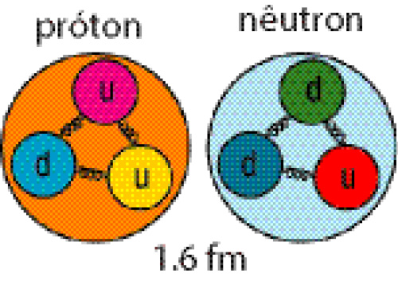
Estrutura atômica de um próton e de um nêutron.
Além da carga elétrica, os quarks apresentam carga de cor, ou carga-cor. A carga-cor é uma propriedade dos quarks que pode se manifestar de três modos: vermelha, azul e verde, que são as cores primárias.
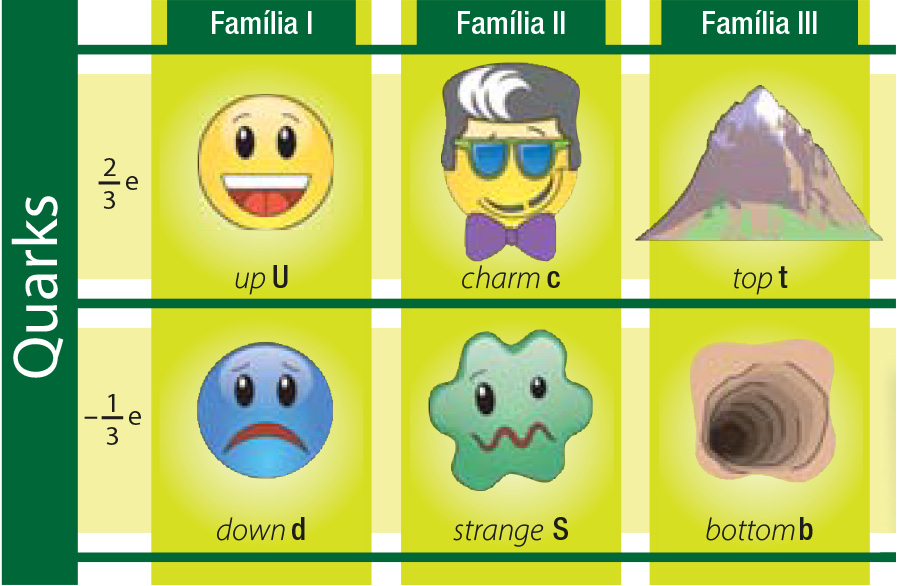
Eduardo Borges. 2015. Digital.
Quadro sistemático com os quarks conhecidos e suas características.
Para a formação dos hádrons, os quarks devem ser combinados de acordo com algumas regras mostradas a seguir.
A soma das cargas dos quarks deve ser um número inteiro entre –2e e 2e. Assim, para formar os bários, como os prótons e nêutrons, são necessários três quarks: no caso dos prótons, que têm carga elementar positiva
(1e), são necessários dois quarks up e um quarks down; no caso do nêutron, que tem carga elétrica neutra, são necessários dois quarks down e um quarks up.
A soma das cores deve resultar em branco, que é a carga cor nula.
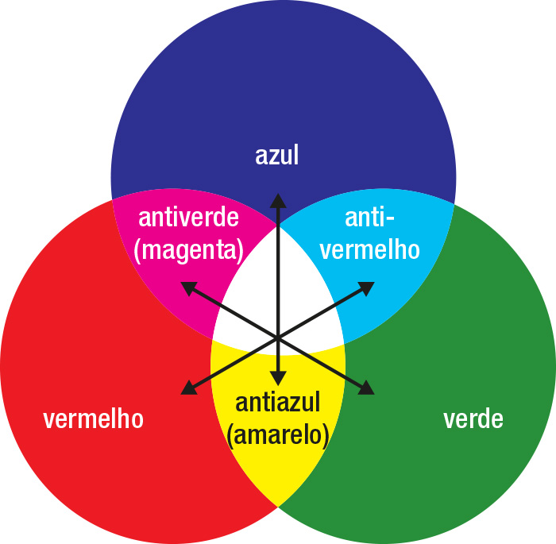
Diagrama de cor e de sobreposição de cores (de luz).
Partículas mediadoras de interação e o modelo-padrão
Com a descoberta de novas partículas e tipos de forças elementares, o modelo-padrão foi desenvolvido e se tornou um aprimoramento do modelo atômico de Rutherford-Bohr. No modelo atual, além das forças eletromagnética e gravitacional,
existem outras forças atômicas de atração e repulsão: a força nuclear forte e a força nuclear fraca. Para contemplar as novas características dessas forças, desenvolveu-se uma nova teoria sobre o modo
de interação remota de partículas no qual, ao contrário da visão clássica de interação entre campos (elétricos, magnéticos, gravitacionais), a interação entre os corpos é uma consequência de troca de partículas mediadoras (bósons).
Os fótons são entendidos como partículas de interação eletromagnética. Se dois elétrons se repelem entre si, por exemplo, o fazem mediante troca de fótons. Além disso, conforme já prevê a teoria clássica, a força
eletromagnética é menor quanto maior a distância entre os portadores de carga.
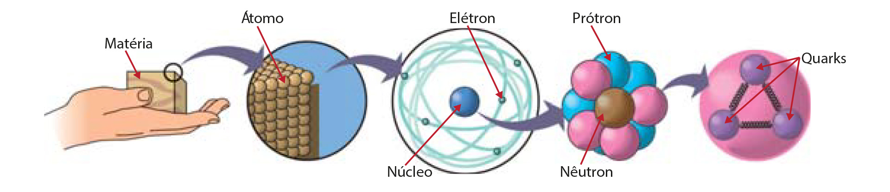
Eduardo Borges. 2015. Digital.
A composição da matéria é, ainda, um dos principais objetos de estudo do ser humano.
Os glúons são partículas de interação de força forte e podem ser compreendidos, analogamente, a molas, mantendo os quarks conectados a uma distância estável – nem muito afastados nem muito próximos. Há ainda
duas outras partículas responsáveis pela existência da força fraca, os bósons intermediários: bósons W e bósons Z.
TABELA DE PARTÍCULAS DE INTERAÇÃO
Mediador
Carga elétrica
Força de interação
Partículas de interação
Estabilidade
Fóton
0
Eletromagnética
Cargas elétricas
Estável
Glúon
0
Forte
Quarks
Estável
Bósons
±1
Fraca
Quarks e léptons
Instável
0
Fraca
Quarks e léptons
Instável
O modelo-padrão é, portanto, formado por uma série de partículas que constituem a matéria (férmions) ou que são responsáveis pela coesão e interação remota da matéria (bósons). Sistematicamente, as partículas se subdividem em
Quarks (que formam os hádrons, ou partículas massivas, como prótons e nêutrons), léptons (partículas elementares leves, como elétrons) e partículas de interação (como glúons e fótons, responsáveis pelas forças fortes e
eletromagnéticas).
Todavia, o modelo-padrão ainda é incapaz de explicar alguns fatos e fenômenos físicos, como a interação gravitacional ou a forma como a massa se distribui nas partículas do modelo-padrão. Outras questões que permanecem em aberto se
referem à antimatéria e à matéria escura, que ainda não foi detectada. Por fim, questiona-se, ainda, se os Quarks e léptons são realmente as partículas elementares da matéria e, caso contrário, do que são formados.
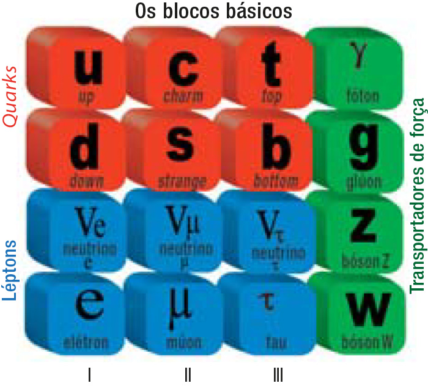
Quadro que sintetiza o modelo-padrão atual.
Organize as ideias
As duas imagens apresentam dois fenômenos que descrevem interações entre matéria e energia. Explique e diferencie cada um dos fenômenos, relacionando-os com os conceitos estudados nesta unidade.
(UFMG) No modelo de Bohr para o átomo de hidrogênio, a energia do átomo:
a) pode ter qualquer valor;
b) tem um único valor fixo;
c) independe da órbita do elétron;
d) tem alguns valores possíveis.
No modelo atômico atual, o próton pode ser considerado uma partícula elementar? Explique.
A partícula próton é constituída de três quarks de dois tipos diferentes. Assinale a alternativa que contém os quarks que constituem o próton:
a)up, up, up;
b)down, down, down;
c)up, up, down;
d)up, down, down;
e)up, down, strange.
(ENEM simulado) “Quatro, três, dois, um... Vá!” O relógio marcava 9h32min (4h32min em Brasília) na sala de comando da Organização Europeia de Pesquisa Nuclear (CERN), na fronteira da Suíça com a França, quando o narrador
anunciou o surgimento de um flash branco nos dois telões. Era sinal de que o experimento científico mais caro e mais complexo da humanidade tinha dado seus primeiros passos rumo à simulação do Big Bang, a grande
explosão que originou o universo. A plateia, formada por jornalistas e cientistas, comemorou com aplausos assim que o primeiro feixe de prótons foi injetado no interior do Grande Colisor de Hadrons (LHC – Large Hadrons
Collider), um túnel de 27 km de circunferência construído a 100 m de profundidade. Duas horas depois, o segundo feixe foi lançado, em sentido contrário. Os feixes vão atingir velocidade próxima à da luz e, então, colidirão um
com o outro. Essa colisão poderá ajudar a decifrar mistérios do universo.
CRAVEIRO, R. “Máquina do Big Bang” é ligada. Correio Braziliense, Brasília, 11 set. 2008, p. 34. (com adaptações).
Segundo o texto, o experimento no LHC fornecerá dados que possibilitarão decifrar os mistérios do universo. Para analisar esses dados provenientes das colisões no LHC, os pesquisadores utilizarão os princípios de transformação da
energia. Sabendo desses princípios, pode-se afirmar que
a) as colisões podem ser elásticas ou inelásticas e, em ambos os casos, a energia cinética total se dissipa na colisão.
b) a energia dos aceleradores é proveniente da energia liberada nas reações químicas no feixe injetado no interior do Grande Colisor.
c) o feixe de partículas adquire energia cinética proveniente das transformações de energia ocorridas na interação do feixe com os aceleradores.
d) os aceleradores produzem campos magnéticos que não interagem com o feixe, já que a energia preponderante das partículas no feixe é a energia potencial.
e) a velocidade das partículas do feixe é irrelevante nos processos de transferência de energia nas colisões, sendo a massa das partículas o fator preponderante.
Física em foco
O texto abaixo é uma carta escrita por Albert Einstein e Leó Szilard para o presidente dos Estados Unidos da América, Flanklin D. Roosevelt, em 1939, alertando-o sobre o uso da radiação para construção de bombas atômicas. Em grupos
de quatro alunos, façam a leitura da carta e a relacionem com a seção Ponto de partida. Façam, ainda, uma pesquisa sobre o projeto Manhattan, sobre o físico que coordenou a pesquisa e seus resultados experimentais e
teóricos.
Senhor:
Alguns trabalhos recentes de E. Fermi e L. Szilard, que me foram comunicados em manuscrito, levaram-me a crer que o elemento urânio possa ser transformado em uma nova e importante fonte de energia em um futuro próximo. Certos
aspectos da situação que se criou parecem exigir atenção e, se necessário, rápida ação por parte da Administração. Creio, portanto, que é meu dever trazer a sua atenção para os seguintes fatos e recomendações:
No decorrer dos últimos quatro meses, foi provado – através do trabalho de Joliot na França, bem como de Fermi e Szilard na América – que é possível a criação de uma reação nuclear em cadeia em uma grande massa de urânio,
através da qual vastas quantidades de energia e grandes quantidades de novos elementos semelhantes ao rádio são gerados. Agora, parece quase certo que isso possa ser conseguido em um futuro próximo.
Esse novo fenômeno levaria também à construção de bombas e é concebível – embora não tão certamente – que bombas extremamente poderosas de um novo tipo possam ser construídas. Uma única bomba deste tipo, carregada por um barco
e explodida em um porto, pode muito bem destruir todo o porto, juntamente com parte do território circundante. Contudo, tais bombas podem muito bem revelar-se demasiado pesadas para o transporte por via aérea.
Os Estados Unidos têm apenas minérios de urânio de baixa qualidade e em quantidades moderadas. Há algumas boas reservas no Canadá e na ex-Tchecoslováquia, mas a grande fonte de urânio está no Congo Belga.
Perante a situação, o senhor pode pensar que é desejável ter mais contato permanente entre a Administração e o grupo de físicos que trabalham em reações em cadeia nos Estados Unidos. Uma forma possível de alcançar este objetivo
pode ser o senhor confiar esta tarefa a alguém de sua confiança que poderia, quem sabe, atuar em condição extra-oficial. Sua tarefa pode compreender:
a) abordar aos Departamentos Governamentais, mantê-los informados sobre o desenvolvimento e apresentar recomendações para a ação do Governo, dando especial atenção ao problema de garantir fornecimento de minério de urânio para
os Estados Unidos;
b) acelerar o trabalho experimental, que está atualmente sendo feito dentro dos limites dos orçamentos dos laboratórios das universidades, fornecendo fundos, caso sejam necessários, pelo contato com pessoas privadas dispostas a
contribuir para esta causa, talvez, inclusive, buscando a cooperação de laboratórios industriais que têm o equipamento necessário.
Eu entendo que a Alemanha realmente parou a venda de urânio das minas da Tchecoslováquia que ela assumiu. Talvez se compreenda por que haja tomado essa ação rápida, pelo fato do filho do Sub-Secretário de Estado Alemão, von
Weizsäcker, ser ligado ao Kaiser-Wilhelm-Institut, em Berlim, onde alguns dos trabalhos americanos sobre o urânio estão agora sendo repetidos.